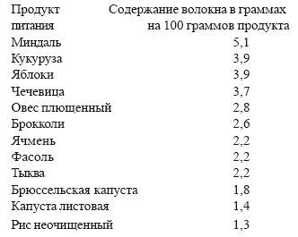
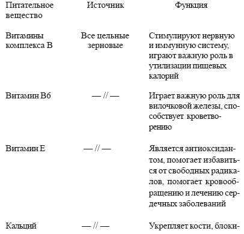
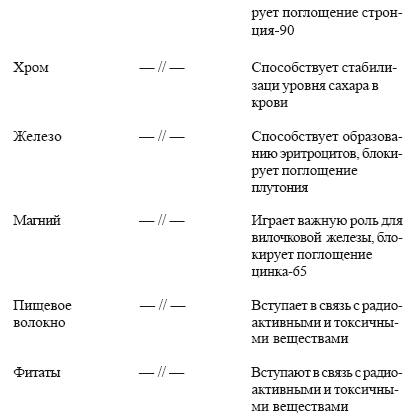
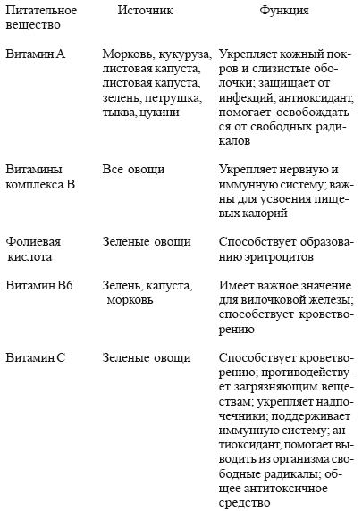
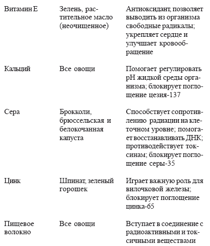
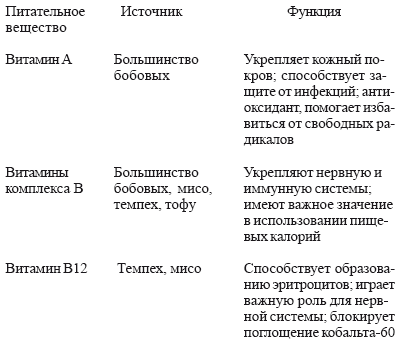
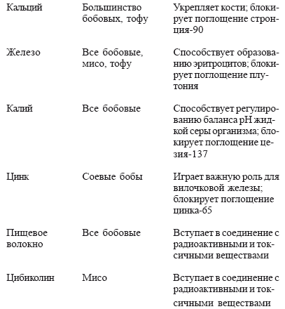
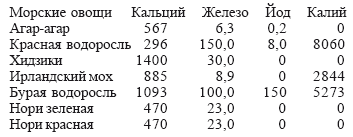
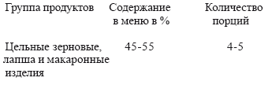
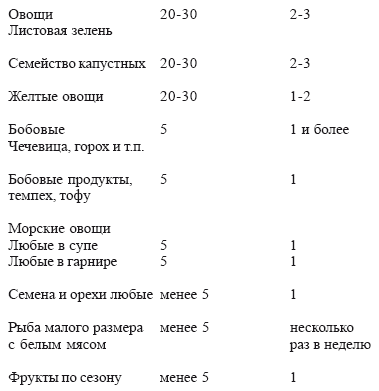

Современное питание

В XX веке в питании произошло много изменений. Майкл Джекобсон, автор книги «Изменения в питании американцев», написанной в 1978 году, сделал вывод, что потребление жиров в США увеличилось по сравнению с 1910 годом в среднем на 31 %, а потребление углеводов уменьшилось на 43 %.
По сравнению с началом XX столетия сегодня средний американец получает 70 % белков животного происхождения, в то время как раньше более 50 % белков были растительного происхождения. Такой режим питания приводит к различным заболеваниям. Поэтому в 1977 году подкомитет сената рекомендовал изменить питание человека.
Вред, наносимый здоровью человека переработанными продуктами.
На здоровье человека благотворно влияет потребление цельных продуктов. Это необработанные в питательном плане продукты без добавления консервантов или каких-либо химических добавок. Переработанные продукты могут привести к потере клетками крови своего электрического заряда. При этом усложняется процесс способности крови проходить через мелкие капилляры, по которым доставляются питательные вещества к тканям. Это приводит к уменьшению защитной реакции организма от радиации. В результате обработки продуктов разрушаются цинк, кальций, калий, а также магний, витамин В6 и витамин Е.
Поэтому мы советуем в значительной степени уменьшить потребление подслащивающих веществ, безалкогольных напитков, консервированных фруктов и овощей, замороженных продуктов. Основное правила: не употреблять маринованных, замороженных, упакованных, быстро приготавливаемых продуктов. Избегайте жирной пищи.
Чрезмерное потребление жиров приводит к отложениям в артериях вредных веществ. Это приводит к ожирению, инсультам, сердечным приступам, диабету, гипертонии. Жировые клетки поглощают и накапливают загрязняющие вещества. Удерживая в организме загрязняющие вещества и токсины, жиры повреждают иммунную систему. Иммунитет будет тем лучше, чем меньше будет в организме жировых клеток. Существуют такие термины, как «насыщенные», «ненасыщенные», «перенасыщенные» жиры. Насыщенные жиры – это сливочное масло, а вот маргарин и растительные масла считаются ненасыщенными. Большое внимание сейчас уделяется роли насыщенных жиров в развитии коронарных заболеваний. Потребление ненасыщенных и перенасыщенных жиров также отрицательно влияет на здоровье человека.
В связи с вышесказанным сделаем следующий вывод: употребление в избыточном количестве указанных жиров может привести к различным нарушениям в организме, в том числе к раковым заболеваниям. Поэтому в целом следует избегать жирных продуктов. Но хотя организм и нуждается в некотором количестве жиров, чтобы обеспечить нормальное протекание процессов обмена, этому может помочь потребление зерновых изделий, семечек, орехов и т. д.
Новое о молоке.
Молоко – это продукт питания, употребления которого легче всего избежать. Оно является переносчиком радиоактивных веществ, хотя в это трудно поверить. Ведь с детства ребенку дают стакан молока, считая, что таким образом мы снабжаем организм кальцием и белками.
Как и жиры, молоко и молочные продукты накапливают загрязняющие вещества. Около двух тысяч лет назад от коровы получали в год около 90 кг молока. Сейчас же корова дает в среднем 4500 кг молока. Все это происходит из-за введения в рацион гормональных веществ, антибиотиков и усиленного питания. В конечном итоге корова меньше живет и больше болеет. И еще: молоко получается нежирным и не имеет всех необходимых питательных веществ.
Даже если молоко и пастеризовать, все равно в нем в какой-то мере остаются вредные бактерии. Кроме того, разрушаются витамины группы В и магний. Всем продуктам, производимым из молока, присущи те же недостатки. Это и масло, и сыр, и йогурт, и мороженое. В результате потребления большого количества молока в организме образуется много слизи, что ведет к застою в кишечнике, в легких, кровеносных сосудах, лимфатической системе; в тканях образуется кислота, что понижает способность организма в борьбе с радиацией. Коровье молоко предназначено для кормления телят; они прибавляют в весе 20–25 кг в первый месяц. Ребенок же в таком возрасте увеличивает вес всего на 0,5 кг. Поэтому молоко коровы соответствует потребностям быстро растущего теленка. А молоко матери, в котором много углеводов и других питательных веществ, удовлетворяет потребности организма ребенка. Поэтому, несмотря на то, что мы привыкли считать молоко ценным продуктом питания, не следует увлекаться им.
Избегайте сахара.
Американцы потребляют сахара в среднем около 55 кг в год. Сахар обычно содержится в макаронных изделиях и консервированных овощах, в кетчупе и приправе к салатам. В желатине содержится 90 % сахара, а в фирменных блюдах из зерновых продуктов – в среднем 26 %.
Обычный сахар или сахарозу получают очищением сахарного тростника или сахарной свеклы. Другие виды сахара включают молочный сахар (лактозу), мальтозу (солодовый сахар), фруктовый сахар (фруктозу), который содержится в фруктах и в меде. Все эти разновидности сахара в организме превращаются в глюкозу и служат источником энергии в организме. Рафинированный сахар таких питательных веществ не имеет. Кроме того, он создает избыточное количество инсулина, что понижает уровень сахара в крови. А это, в свою очередь, отрицательно сказывается на физических и умственных способностях человека.
Сахар образует в организе человека органические кислоты, изменяет минеральный обмен, способствует образованию камней в почках, отрицательно воздействует на усвоение организмом витамина В. Чрезмерное потребление сахара ведет к таким заболеваниям, как артрит, алкоголизм, бессонница, раздражительность, спутанное сознание и многим другим.
Сахар обусловливает повышенную чувствительность человека к воздействию радиации. Доктор Тацуиширо Акизуки в дневнике «Нагасаки 1945» исключает сахар из рациона питания вообще, т. к. он усиливает тяжесть протекания радиационной болезни. Акизуки писал: «Я не располагал… научными работами относительно лучевой болезни. Тем не менее я совершенно убедился в действенности моего метода питания, а именно минеральной диеты, что можно просто определить следующим образом: соль или ион натрия обеспечивали жизнеспособность кроветворных клеток, в то время, как сахар оказывался для них токсином». И именно применение методов Акизуки помогло выжить после атомной бомбардировки ему самому и оказывало помощь людям, которые приходили в его клинику. Люди, которые заботятся освоем здоровье, могут заменить сахар такими продуктами, как мед, сироп из ячменного солода, кленовый сироп, концентрированные фруктовые соки, мелисса, фруктоза. Чтобы быть здоровым, надо вообще исключить сахар из рациона питания. Для этого необходима большая сила воли, огромное желание. Ну, а если уж очень захочется чего-то сладкого, то можно использовать менее очищенные виды сахара.
Избегайте очищенных зерновых продуктов.
Очищенные зерновые продукты приносят вред нашему здоровью. Выпеченные из очищенной пшеницы изделия образуют скопление слизи, происходит застой в печени. В результате очистки зерна пшеницы или риса теряют большой процент радиозащитных питательных веществ, которые необходимы для защиты нашего организма. Особенно значительна потеря витамина В6; уменьшается содержание цинка. Кроме того, в зернах остается большое количество токсичного металла – кадмия, что отрицательно сказывается на функционировании почек. Очищенные зерновые изделия обогощаются витамином В1 и В2, витамином Р и железом. Но при этом витамины В6, В3 и Е не восстанавливаются. Витамин В6 очень важен для иммунной системы, а витамин В3 предупреждает нарушение функции надпочечников. Витамин Е является самым важным в защите нашего организма от свободных радикалов. Очищенные продукты питания стимулируют работу надпочечников, в результате этого печень высвобождает сахар, поступающий в кровь. Это, в свою очередь, вырабатывает гормоны инсулина в поджелудочной железе. Вследствие этого организм регулирует содержание сахара в крови. А это ослабляет работу печени, надпочечников и поджелудочной железы. Все это отрицательно сказывается на здоровье человека и вызывает аллергию и раннее старение.
Избегайте мяса.
Как же мясо действует на наш организм? Проведение анализа рациона питания первобытнообщинных людей показало, что они включали в пищу растительных продуктов в три раза больше, чем животного происхождения. А сейчас взрослый американец съедает в год 110 кг мяса. Как видно, пропорции совершенно обратные. Это ведет к серьезным последствиям для нашего здоровья.
Как известно, мясо содержит белок, который необходим для процессов роста и восстановления. Молекула белка содержит много аминокислот, количество которых составляет 22. Мясо – лучший источник аминокислот. Организму нужны белки, так как они являются строительным материалом. Но есть разумный предел. Избыточное потребление белков приводит к различным заболеваниям, например, такому, как остеопороз, т. е. – разрежение костного вещества в костях, слабость костей; создает большую нагрузку на печень, почки, увеличивает концентрацию мочевины в крови, что в свою очередь усиливает кислотность.
Включение мяса в наш рацион в большом количестве ведет к ожирению, т. к. этот продукт богат жирами и калориями. Оно засоряет наши артерии, которые должны быть чистыми, чтобы циркулировала кровь, несущая кислород. Если артерии сужаются, это может привести к повышенному кровяному давлению, сердечным приступам и инсультам. Потребление мяса может привести к раковым заболеваниям прямой кишки. Это объясняется тем, что время прохождения мяса через кишечник занимает от нескольких часов до более суток, вызывая процесс гниения и способствуя сильному поглощению организмом радиоактивных веществ.
Качество мяса зависит от его переработки и упаковки. Министерство сельского хозяйства США в марте 1984 года сделало вывод, что мясо, которое закупалось в течение 2 лет, содержало загрязняющие химические вещества. В сентябре 1984 года в газете «Нью-Йорк Таймс» отмечалось, что владельцы фирмы по упаковке мяса оказались виновными в нарушении федеральных законов. Было выяснено, что работники фирмы после прохождения федеральной инспекции подмешивали некачественное мясо. В мясе, производимом в США, может оказаться до 500–600 токсичных химических элементов.
Ко всему прочему, приготовление мяса также может привести к различным заболеваниям. Например, при хранении в мясе образуются канцерогенные и мутагенные вещества. Итак, мы вполне убедительно доказали, что потребление мяса приносит большой вред нашему организму.
Другие опасные продукты питания.
Есть продукты питания, которые могут быть переносчиками больших доз радиоактивного загрязнения. Поэтому знать об этом особенно важно.
После аварии на Чернобыльской АЭС во многих регионах было отмечено большое количество радиоактивных веществ на салатных листовых овощах. Долгоживущие радиоактивные осадки (стронций, цезий) также попадают в почву и могут воздействовать на продукты в течение многих лет. Но это не значит, что вся морковь и плоды деревьев с длинными корнями непригодны для пищи. Здесь следует учитывать, откуда привозят продукты и в какой местности вы живете.
Следует сказать и об океанической и пресноводной рыбе. В 1973 году комитет по вопросам защиты продуктов питания и отделение по вопросам продуктов питания Национальной академии наук США издали книгу «Радионуклиды в продуктах питания», в которой говорится: «В различных видах пресноводной рыбы, поставляемой на внутренний рынок в Соединенных Штатах, обычно отмечается наличие цезия-137; уровень загрязнения от 100 до 5 тысяч пикокюри на килограмм в сыром весе». С другой стороны в океане имеются минералы, которых нет в пресной воде, либо есть, но в малом количестве. Устойчивые минералы уменьшают радиоактивные вещества, содержащиеся в рыбе.
Поэтому морская рыба гораздо полезнее для нашего организма, нежели речная.
Как обеспечить свой организм энергией и при этом хорошо выглядеть
Подведем итог, какой нужно придерживаться диеты, чтобы хорошо себя чувствовать, нормализовать свой вес, улучшить здоровье и, наконец, сэкономить денежные средства. Это диета, которая исключает очищенные продукты питания и включает продукты из цельного зерна, овощей и бобовых.
В 1986 году было проведено исследование, которое показало, что более 30 % американцев имеет избыточный вес (около 10 лишних килограммов). А вес вегетарианцев на 10 кг ниже среднего. Это объясняется тем, что вегетарианская диета включает большое количество цельного зерна, которое обеспечивает объемное питание при меньшем калораже, но большем количестве питательных веществ.
Сложные углеводы легко утоляют голод. Люди, которые потребляют натуральные продукты, реже болеют, т. к. в натуральных продуктах отсутствуют слизеобразующие вещества и преобладает наличие белков. Луи Пастер сказал: «Микроб – это ничто. Сопротивляемость организма – это все». Подтвердить это изречение может следующий пример. Когда человек простывает, организм пытается удалить накопленные в нем токсины путем выведения их через кожу, легкие, нос, прямую кишку и почки. Если очищению организма не препятствует пища и лекарства, организм сам восстанавливает свое здоровье.
Питание, которое мы рекомендуем в атомном веке – это сбалансированная схема, при которой мы не только не засоряем свой организм мусором, но в то же время даем ему возможность строить новые клетки с помощью высокопитательных веществ. Давайте изменим свою диету, исключим мясо, жиры, сахар, очищенные и переработанные продукты. Вначале это будет трудно, но как только пройдет переходный период, сразу же придет чувство здоровья и благополучия.
Появится чувство удовлетворения и вдохновения, т. к. вы будете уверены в том, что от качества еды будет зависеть ваше здоровье.
Пищевое волокно.
Пищевое волокно защищает нас от радиации. Оно включает структурные части растения, например, отруби цельных зерен или семечки, кожуру овощей и фруктов. Несмотря на то, что кишечник не переваривает и не усваивает пищевое волокно, тем не менее оно помогает организму усваивать питательные вещества, поддерживать постоянное состояние интоксикации.
Пищевое волокно отсутствует в сахаре, жирах; незначительно его количество и в большинстве переработанных продуктов. В американском журнале по лечебному питанию в 1974 году была опубликована статья, выражающая озабоченность по поводу изменения в питании в западном мире. В ней говорится: «Возникают серьезные сомнения относительно того, не таят ли в себе опасность лекарства, химические вещества и пищевые добавки для значительной части населения в этих странах, даже если эти лекарства, химикаты и пищевые добавки могут оказаться безобидными для людей, в рационе которых присутствует большое количество пищевого волокна.»
Пищевое волокно способствует росту в кишечнике благотворных бактерий, которые синтезируют витамины группы В, продуцирует ферменты, улучшает пищеварение. Есть пять основных видов пищевого волокна. Нерастворимое волокно – целлюлоза и лигнин. Целлюлоза удерживает воду и поглощает растворенные в воде токсичные вещества. Пектины, камедь и гель – это растворимые виды волокна, получаемые из фруктов, овощей и бобовых, которые уменьшают поглощение жиров и понижают степень поглощения организмом сахара. Некоторые больные сахарным диабетом могли обходиться без инсулина, если переходили на зерновую диету. Но это, естественно, должно проходить под наблюдением врача. Яблоки, белокочанная или цветная капуста содержат большое количество пектина, а в зерновых и бобовых культурах имеется много целлюлозы. Высокое содержание пищевых волокон уменьшает запоры, помогает людям, страдающим сердечными заболеваниями. Но самое важное свойство пищевого волокна, которое защищает нас от радиации, заключается в его связывающей способности. Лигнины, камедь или пектины образуют химические соединения с ядовитыми веществами, в результате чего возникает менее токсичное вещество. А пищевые волокна притягивают и удерживают воду, и это способствует разбавлению ядов и быстрому прохождению отходов пищеварения по кишечнику.
Сколько нам нужно пищевых волокон?
Если наш завтрак будет состоять из чашки кофе с булочкой, обед из жареной говядины с картошкой под соусом и шоколадного пирожного, то все это составит всего лишь 3 грамма пищевых волокон.
В таблице, помещенной ниже, приведены наиболее принятые значения содержания пищевого волокна.
ПИЩЕВОЕ ВОЛОКНО

Из этой таблицы видно, как просто мы можем включить в свой рацион богатые волокнами овощи, бобовые и цельнозерновые продукты.
Ученые по-разному подходят к тому, какое количество пищевых волокон необходимо организму. Одни считают, что достаточно 10 граммов в день. А д-р Денис Буркитт, который первым подчеркнул важность употребления пищевого волокна, рекомендует 25–30 грамммов в день.
Защитные продукты питания.
К ним относятся цельные зерновые культуры, свежие овощи, бобовые, семечки и орехи.
Цельное зерно. Оно богато сложными углеводами, витаминами группы В1 и микроэлементами. Цельное зерно – источник белков, но имеет низкое содержание натрия и жиров, обеспечивает наш организм пищевыми волокнами и фитатами, имеющими большое значение в защите организа от радиации. К сожалению, в результате переработки и очистки зерна снижаются его питательные и радиозащитные свойства, даже если добавляются витамины и минералы. Но в наше время существуют различные цельнозерновые культуры. Это неочищенный рис, просо, ячмень, кукуруза, гречиха, пшеница, овес, рожь. Так что, заботясь о своем здоровье, употребляйте половину каждой из указанных культур в цельном виде.
Овощи. Свежие овощи содержат кальций, железо, витамины А,С и группы В и являются хорошим источником пищевых волокон. Некоторые овощи имеют серосодержащие аминокислоты – цистеин и метионин. Пища человека должна на четверть состоять из овощей. Необходимо употребление зелени, желтых овощей и различных видов капусты.
Бобовые. Это источник витаминов, минералов и белков. Белки в бобовых дополняют белки, которые содержатся в цельном зерне. Бобовые богаты пищевыми волокнами и должны составлять 5 % дневного рациона. Сюда относятся чечевица, угловатая фасоль, бараний горох.
Мисо. Это растительный источник витамина В12. Суп, включающий мисо, морские водоросли вакаме и свежие овощи, следует употреблять в пищу один или два раза в день.
Тофу и темпех. Тофу – традиционное восточное блюдо, похожее на светлый сыр. Этот соевый продукт содержит белок и другие питательные вещества. Темпех, как и тофу, приготавливается из соевых бобов, но подвергается ферментации. Темпех имеет низкое содержание жиров и калорий и может заменять мясо.
Морские овощи. Морские овощи включают йод, содержат ценный хелатный элемент – альгинат натрия. Альгинат натрия вступпает в химическую связь с радиоактивными веществами и превращает их в соли. Морские овощи должны составлять 5 % дневного рациона.
Семена и орехи. Семена подсолнечника содержат пепсин – волокно, которое связывает токсины. Семена кунжута содержат кальций, а в сочетании с рисом служат дополнительным источником белка. Миндаль – особенно ценный продукт для здоровья человека. Соевые продукты, семена и орехи должны составлять до 5 % рациона.
Несколько раз в неделю можно съесть морских продуктов, умеренное количество местных фруктов. Но при этом надо убедиться, что они не содержат загрязняющих веществ выше допустимой нормы.
Вкусовые качества любого блюда можно улучшить с помощью трав и специй. Это имбирь, хрен, лук и чеснок. Красная гвоздика также имеет очищающее свойство.
При соблюдении диеты мы можем принести большую пользу как своему здоровью, так и здоровью своих близких.
Цельное зерно
Е.Дж. Кан в книге «Помощник жизни» говорит: «Большинство людей на Земле не ест много арахисового масла и желе, или много говядины или свинины, или птицы, или рыбы, хотя, вероятно, и хотели бы. Они питаются рисом и пшеницей, кукурузой и сорго, просом и маниокой или картофелем. Все это для них означает пищу – те привычные продукты питания, без которых жизнь на Земле была бы невозможной более чем для половины населения.» В современном мире фермеры могут легко вырастить достаточное количество зерновых и клубнеплодов, чтобы обеспечить каждого человека тремя тысячами калорий в день, то намного выше принятого минимума для адекватного питания.
Мы, по существу, отказались от зерновых. А ведь древние жители Греции, Рима, Индии, Китая и Японии питались преимущественно просом, рисом, ячменем, кукурузой, лишь изредка потребляя рыбу и мясо. Археологические раскопки доказали это.
Давайте дружить с зерном.
Просо – один из источников полноценного зерна. Его можно сравнить с мясом, т. к. оно содержит все необходимые аминокислоты. Рис можно есть каждый день. Это вкусная пища, хороший жевательный продукт.
В гречке содержится рутин, марганец, магний, витамин Е. Гречка хорошо согревает, поэтому она хороша зимой. Кроме того, что это вкусный продукт, гречка еще и благоприятно воздействует на почки. Овес, как и гречка, подходит для холодных месяцев. Цельный овес заливается холодной водой на ночь или же варится целый час. Овес содержит самый большой процент жиров. Он полезен людям с пониженной функцией щитовидной железы. Кроме перечисленных свойств, овес богат железом и кальцием.
Ячмень – древнейшая культура. Он идет, в основном, на корм для скота; четверь его используется для приготовления пива и виски.
Но из ячменя можно приготовить вкусный ячменный суп и запеканку с овощами.
Рожь сочетают с другими продуктами, чтобы придать ей вкусовые качества. Она ценна тем, что придает энергию и повышает жизненный тонус.
Кукуруза – хорошее средство для кроветворения. В наши дни из кукурузной муки приготавливают хлеб и другие мучные изделия.
ЗАЩИТНЫЕ ФУНКЦИИ ЦЕЛЬНОГО ЗЕРНА


Овощи помогают кроветворению
Овощи содержат такое ценное вещество, как магний. Они нужны для кроветворения и имеют большое количество витамина С. Витамин С, в свою очередь, необходим нашему организму, т. к. помогает функционированию надпочечников, поддерживает иммунную систему, защищает клетки от воздействия радиации. Овощи необходимо употреблять в свежем виде, т. к. со временем содержание витамина С значительно уменьшается.
Кальций из листовой зелени. Зелень имеет ряд преимуществ. Она богата хлорофиллом, железом, витамином С, комплексом витаминов В, витаминами А и Е и минералами – калием, магнием, кальцием. Сюда можно отнести листья турнепса, листовую капусту и водяной кресс, которые хорошо усваиваются организмом. Шпинат, листовая свекла и листья сахарной свеклы тоже содержат кальций, но он труднее усваивается организмом, т. к. в них имеется щавелевая кислота.
Желтые и зеленые овощи. Чем больше мы употребляем желтых и зеленых овощей, тем меньше вероятность раковых заболеваний. Одним из таких защитных средств является морковь. В журнале «Сайлнс» относительно каротина, который содержится в моркови, сказано: «Каротин представляет собой еще один анти-оксидант в рационе питания, который может сыграть важную роль в защите вашего организма и предупредить окисление жиров и мембран. Каротиноиды хорошо улавливают свободные радикалы и отлично подавляют ионизированный кислород, который обладает мутагенными свойствами. Каротин присутствует в моркови и во всех продуктах, содержащих хлорофилл».
Каротин преобразуется в витамин А, который укрепляет вилочковую железу и вырабатывает иммунитет. Особенно богаты каротином тыква, кукуруза и пастернак. Такие же свойства имеет листовая капуста, шпинат, фасоль и многие зеленые овощи семейства капустных.
Семейство капустных. Защитными свойствами обладают овощи, которые содержат серу. Это брокколи, брюссельская капуста, кочанная капуста, листовая капуста, молодые листья горчицы, репчатый лук и петрушка. Джон Ласт в своей работе «Книга о травах» указывает на то, что «сера … помогает бороться с токсичными заболеваниями в организме, вступая с ними в связь и образуя безопасные соединения».
СЕМЕЙСТВО КАПУСТНЬГХ
Брокколи
Кольраби
Брюссельская капуста
Листья горчицы
Цветная капуста
Краснокочанная капуста
Кочанная капуста
Редька
Китайская капуста
Брюква
Листовая капуста
Турнепс
Хрен
Водяной кресс
В журнале «Экспериенция» в 1950 году были опубликованы данные опытов, проведенных Луру и Лартигом; суть их заключается в том, что они одну группу морских свинок кормили капустой, а другую свеклой. Оказалось, что смертность была ниже у тех свинок, которых кормили капустой.
В августе 1970 года в журнале «Саентифик Америка» была опубликована статья «Свободные радикалы в биологических системах», в которой говорится о роли серы: «Поскольку серные соединения легко взаимодействуют с радикалами, неудивительно, что они могут служить как бы лекарством от радиации. Существует целый ряд механизмов защиты молекулы клетки от воздействия радиации. Например, соединения, содержащие группу S-H (тиолы), могут защищать биологически важные молекулы посредством процесса восстановления».
Кроме радиоактивных свойств, овощи также помогают в борьбе с раком. Авторы Ли Ваттенберг и др., установив наличие соединений, которые подавляют канцерогенное воздействие химических элементов, отметили: «Все большее их число … обнаруживается в природных продуктах. Такие соединения содержатся в крестоцветных овощах, включая брюссельскую, белокочанную и цветную капусту». Такими же свойствами обладают турнепс и брокколи. Брюссельская и белокачанная капуста усиливают усвоение организмом некоторых болеутоляющих веществ.
ОВОЩИ И ИХ ЗАЩИТНЫЕ ФУНКЦИИ


Бобовые. Бобовые—это горох, фасоль, бобы. Сюда можно отнести овощную зелено-стручковую фасоль и лимскую фасоль. Бобовые – источник белка и кальция; снабжают организм витаминами В и А. Эти растения имеют радиозащитные свойства и уеньшают риск заболевания раком.
Культура бобовых богата лизином, которого недостает в зерновых.
Древние чувствовали каким-то образом, что зерновые и бобовые являются дополнительным источником белка. Например, индейцы в пищу из кукурузы добавляли бобовые. А на Востоке традиционный рис тоже смешивали с бобовыми.
Бобовые в ежедневном рационе. Бобовых имеется большое разнообразие. Самые питательные – это фасоль адзуки, чечевица и бараний горох. Бобовые замачивают на несколько часов, чтобы они легче переваривались организмом. После этого воду надо слить и варить в свежей воде 30 минут. Потом эту воду опять слить и довести до готовности. Чечевицу не надо замачивать, т. к. она быстро готовится. Она может быть хорошей едой на обед. Бобовые можно варить на несколько дней. При этом их следует хранить в холодильнике, а затем в нужном количестве добавлять в суп.
ЗАЩИТНЫЕ ФУНКЦИИ БОБОВЫХ И СОЕВЬХ ПРОДУКТОВ


Мисо – полезная еда. Мисо – это паста, приготовленная из соевых бобов и морской соли. Сюда добавляют рис и ячмень. Мисо поддерживает микрофлору в кишечнике, способствуя пищеварению и устойчивости организма к заболеваниям, уменьшает восприимчивость к радиации. Но мисо не должно подвергаться пастеризации, т. к. тепло разрушает живые микроорганизмы. Мисо содержит кальций, железо и витамины группы В; витамин В12, который защищает от кобальта-60.
Т. Азизуки из Нагасаки заинтересовался свойствами мисо, и в своей книге «Физическое здоровье и питание» сделал следующий вывод: «Мне кажется, что суп из мисо – это самая важная часть нашего питания. Я установил, что, за небольшим исключением, семьи, в которых едят суп из мисо каждый день, почти никогда не болеют. Я считаю, что мисо относится к высшему классу лекарств, которые помогают предупредить болезнь и укрепить организм за счет их регулярного употребления. Общее состояние здоровья человека определяет частоту и степень заболевания: либо редко и в легкой форме, либо часто и серьезно».
Мисо помогло выжить после бомбардировки Нагасаки. Когда в 1945 году атомная бомба взорвалась недалеко от клиники Святого Франциска, доктор Азизуки с сотрудниками продолжал лечить людей, пострадавших от радиации. Он говорил: «В течение некоторого времени до бомбардировки я кормил своих работников неочищенным рисом и мисо. И ни один из них не пострадал от атомного излучения. Я объясняю это тем, что они питались супом из мисо.
Именно благодаря этому методу мы все могли работать для людей день за днем, преодолевая усталость и симптомы лучевой болезни, и пережили эту катастрофу без сильных проявлений симптомов заболевания».
Национальный центр Японии по борьбе с раком сделал вывод, что люди, которые употребляли пищу из мисо, имели уровень заболевания раком на 33 % ниже, чем те, которые никогда не ели мисо. Д-р Т. Хираяма полагает, что «суп из соевой пасты (мисо) оказывает различное защитное действие, является хорошим питательным средством для организма и тем самым делает организм более здоровым и устойчивым к раку … Овощи, используемые в мисо, имеют определенный эффект в борьбе с раком».
Мисо – вкусная и питательная пища. Из него можно приготовить суп, отличный соус для зерновых и овощей. При растворении в горячей воде получается вкусный бульон, который заменяет кофе или чай.
Томпех и тофу. Это белковые продукты, приготовляемые из соевых. В них мало загрязняющих веществ; они не жирные и мало калорийные; имеют много лизина.
Томпех содержит витамин В12; ряд полезных микроорганизмов, типичных для ферментированных продуктов; фитаты, которые выводят из организма радиоактивные элементы. Готовят томпех из вареных соевых бобов с помощью полезных бактерий, которые по вкусу делают продукт похожим по вкусу на цыпленка или на грибы.
Тофу готовят также из соевых бобов, перетирая их в виде пюре. Тофу не имеет вкуса, но хорошо впитывает различные специи. Его используют с овощными блюдами и рисом. Хранят тофу в холодном месте.
Морские овощи.
Последнее время в США различные виды водорослей получили широкое признание. Они богаты минералами и радиозащитным соединением альгинатом натрия.
Океаны занимают 70 % поверхности Земли. В море есть все необходимые для жизни компоненты. Минералы и питательные вещества, содержащиеся в морской воде, поглащаются морскими овощами и становятся доступными для человека. Морские овощи содержат йод, кальций, калий и железо. Также содержатся такие элементы, как хром, цинк, магний и марганец. Из витаминов в большом количестве содержится витамин В12.
В таблице показано содержание минералов в различных морских овощах.
СОДЕРЖАНИЕ ХИМИЧЕСКИХ ЭЛЕМЕНТОВ В МОРСКИХ ОВОЩАХ (МГ\100Г)

Орехи и семена – очень важный продукт питания. Они представляют собой сильно концентрированные и компактные продукты питания и содержат много витаминов и минералов, таких, как витамины В, Е, кальций, магний, натрий, железо и цинк. Для орехов характерен малый процент химических и радиоактивных веществ. В орехах и семенах содержатся жирные кислоты, которые необходимы для нашего организма. Радиозащитная функция их заключается в том, что орехи и семена содержат пектин (пищевые волокна) и фитаты, которые способствуют выделению радиоактивных веществ.
Самое высокое содержание кальция в миндале и фундуке. Миндаль богат магнием. Грецкий орех также богат кальцием и железом, а наиболее питательным считается американский черный орех. Он очень твердый и его трудно расколоть. Фисташковый орех содержит много железа, калия и тиамина. Арахис богат витамином Е и ниацином, а также в нем много белка.
Семена кунжута – одна из разновидностей древнейших культур. В нем много кальция. Семена кунжута после обжаривания добавляют в зерновые и овощные блюда.
Семена тыквы и подсолнечника богаты цинком, который необходим для функционирования вилочковой железы; они вкусны в поджаренном виде с добавлением нескольких капель соуса тамари или морской соли.
Существует множество различных видов семян и орехов, поэтому без проблем можно включить их в ваш рацион.
Различные питательные вещества и их ценность
Мы приводим перечень витаминов, химических элементов, который поможет быстро определить ценность каждого питательного вещества.
ВИТАМИНЫ
Витамин А (каротин):содержится в желтых и зеленых овощах и бобовых. Являясь антиоксидантом, витамин А защищает клетки, избавляя их от свободных радикалов. Витамин А способствует укреплению кожного покрова и слизистых оболочек. Кроме того, он усиливает устойчивость организма к инфекциям, он даже может предупредить развитие рака.
Витамины комплекса В: содержатся в цельном зерне, овощах, бобовых, мисо, орехах и семенах. Комплекс В включает группу родственных соединений: витамин В1 (тиамин), В2 (рибофлавин), В6 (пиридоксин), В12 (цианокобаламин), также пантотеновую кислоту, ниацин, биотин, фолиевую кислоту. Все витамины группы В способствуют укреплению иммунной и нервной системы. Кроме того, они играют важную роль в метаболизме продуктов питания.
Витамин В6:содержится в цельном зерне и овощах. При переработке или очистке зерновых этот витамин безвозвратно теряется. Он играет важную роль для вилочковой железы, которая управляет действием иммунной системы. Помимо других полезных функций, витамин В6 также участвует в образовании эритроцитов.
Витамин В12:содержится в мисо, темпехе и морских овощах. Блокирует поглощение кобальта-60 и способствует образованию эритроцитов. Кроме того, он необходим для нормального функционирования нервной системы.
Фолиевая кислота: содержится в зеленых листовых овощах. Способствует образованию эритроцитов.
Витамин С (аскорбиновая кислота):содержится в свежих зеленх овощах и фруктах. Поддерживает иммунную систему, необходим для работы надпочечников, способствует кроветворению и утилизации кальция. Является антиоксидантом и противодействует загрязняющим веществам.
Витамин Е (токоферол):содержится в зерновых, овощах, орехах, семенах и растительном масле. Как и витамин С, играет универсальную роль. Витамин Е способствует работе сердца и кровообращению и противодействует свободным радикалам.
МИНЕРАЛЬНЫЕ ЭЛЕМЕНТЫ
Кальций: содержится в зеленых овощах, семенах кунжута, миндальном орехе, бобовых, морских овощах, цельном зерне, тофу, мисо. 99 % кальция в нашем организме содержится в костной системе; остальная часть регулирует нервную и мышечную систему, а также рН крови. Кальций также может предупредить поглощение организмом радиоактивного йода-131.
Железо: содержится в листовых зеленых овощах, цельном зерне, морских овощах, бобовых, орехах и семенах. Играет важную роль в образовании эритроцитов. Кроме того, блокирует поглощение плутония.
Калий: калий содержится во всех овощных и бобовых. Также присутствует в морских овощах. Калий способствует регулированию рН жидкой среды организма и блокирует поглощение цезия-137.
Хром: содержится в цельном зерне и морских овощах. Играет важную роль в поддерживании уровня сахара в крови. (Нарушение углеводного обмена может привести к развитию гипогликемии или диабета.)
Магний: содержится в зеленых листовых овощах, цельном зерне, морских овощах и орехах, особенно в миндале. Магний способствует поддержанию рН в организме человека, а также оказывает успокаивающее воздействие на нервную систему.
Селен: содержится в цельном зерне, чесноке и некоторых овощах. В некоторых сельскохозяйственных районах содержание селена в почве очень незначительно. Этот элемент противодействует свободным радикалам, тем самым защищая нас от радиации и стимулируя иммунные функции.
Цинк: содержится в цельном зерне и зеленых овощах (если они выращиваются на почве, содержащей цинк), морских овощах, орехах и семенах. Этот минерал имеет важнейшее значение для вилочковой железы и блокирует поглощение цинка-65. Кроме того, цинк способствует поддержанию уровня сахара в крови, участвует в процессах роста, имеет лечебную функцию и способствует умственной деятельности.
Руководство по планированию ежедневного рациона
Чтобы включать в рацион питания необходимые защитные продукты, надо разделить их на группы и запомнить количество порций каждой группы. Для этого нужно составить список и повесить его на видное место. Тогда вы будете правильно потреблять ежедневную норму питательных веществ и превратите свой организм в механизм борьбы с загрязняющими веществами.
Нужно иметь в виду, что для удлинения сроков хранения продуктов питания применяют метод облучения, который уничтожает определенные бактерии. Это – опасная действительность. Продукты при этом подвергаются воздействию гама-излучению цезия-137 и кобальта-60.
При облучении продуктов образуются так называемые радиолитические продукты. Они содержат вредные для здоровья свободные радикалы – двуокись водорода, а также канцерогенные и мутагенные химические элементы. Приверженцы облучения продуктов считают, что этот процесс безвреден. Но опыты показали, что облученные продукты способствуют образованию раковых заболеваний, вызывают болезнь печени, почек, врожденные дефекты и изменения в крови. Но длительное наблюдение пока еще не проводились.
РУКОВОДСТВО ПО ПЛАНИРОВАНИЮ ПИТАНИЯ

